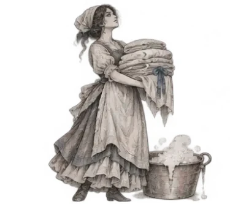
Washerwoman
Townsfolk
You start knowing that 1 of 2 players is a particular Townsfolk.

You start knowing that 1 of 2 players is a particular Townsfolk.
You start knowing that 1 of 2 players is a particular Minion.
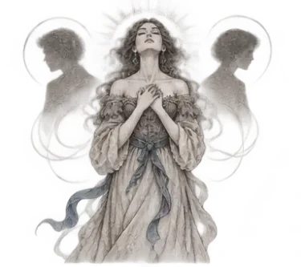
Each night, you learn how many of your 2 alive neighbours are red.
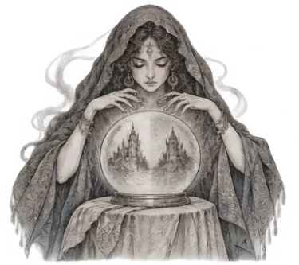
Each night, choose 2 players: you learn if either is a Demon. There is a blue player that registers as a Demon to you.
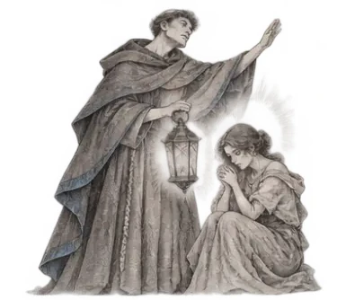
Each night*, choose a player (not yourself): they are safe from the Demon tonight.
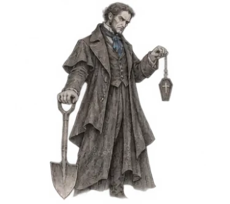
Each night*, you learn which character was voted out today.
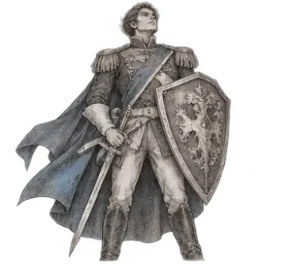
You are safe from the Demon.
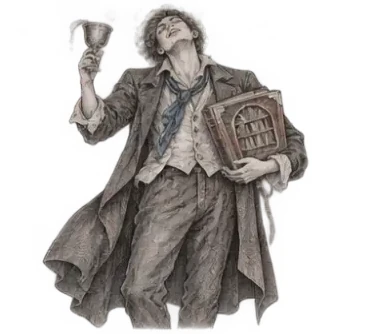
You do not know you are the Drunk. You think you are a Townsfolk character, but you are not.
In these games the Drunk thought it was the Librarian, so its information was false.
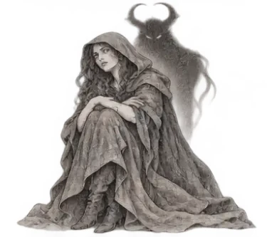
You might register as red and as a Minion or Demon, even if eliminated.
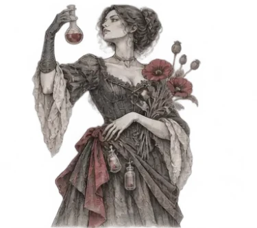
Each night, choose a player: they are poisoned tonight and tomorrow day. Their ability does nothing and their information may be false.
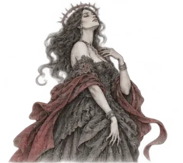
If there are 5 or more players alive and the Demon is eliminated, you become the Demon.
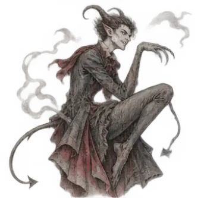
Each night*, choose a player: they are eliminated and leave the game. If you eliminate yourself this way, a Minion becomes the Imp.
A child gets the parent's character and team but no ability. A family is one original player and all of its children.